A dock_board exposes a single argument that controls
panel arrangement: the layout. This vignette walks through
every shape layout accepts, shows what UI each shape
produces, and ends with patterns for the layouts you’ll build most
often.
The big picture
Internally, every board carries a dock_layouts() object.
This is a list of one or more views (the global tabs
you see at the top of the app). A view’s content is a
dock_layout: the per-view DockView grid that arranges block
and extension panels.
Single-page boards are the degenerate case: a
dock_layouts with one auto-named view called
"Page". The view-nav dropdown is always present; it just
has one entry until you add more.
When you pass a layout = argument to
new_dock_board(), the constructor normalises it to a
dock_layouts:
| You pass | Treated as | Final shape |
|---|---|---|
dock_layouts(...) |
multi-view, as-is | itself |
A dock_layout (resolved via
create_dock_layout()) |
single page | dock_layouts(Page = ...) |
| A raw list (grid spec) | single-page raw grid | dock_layouts(Page = ...) |

The catch-all bottom branch covers anything else: a raw nested list,
a top-level character vector, even a named list of lists. Names
at the top level are dropped there; to get multiple views you
must use dock_layouts(...) explicitly.
So you only ever need to think about two things: the grid
syntax for arranging panels inside a view, and the
dock_layouts() syntax for having more than
one view.
Starting from scratch
The simplest possible board: no blocks, no extensions, no
layout. Since, new_dock_layout() defaults to
dock_layouts(Page = default_view_grid(blocks, extensions)),
and default_view_grid() returns an empty list when there
are no blocks or extensions, the resulting layout is
dock_layouts(Page = list()):
┌────────────────────────────┐
│ Page [+] │
├────────────────────────────┤
│ │
│ ⊕ │
│ │
│ Start by adding a panel │
│ │
│ [ Add panel ] │
│ │
└────────────────────────────┘You get a single auto-named Page view holding the
watermark prompt. Clicking Add panel would normally
open the panel picker, but here the board has no blocks or extensions to
choose from, so the picker says so and points you to add a block first.
From this empty starting point you can grow the board interactively.
When you do supply blocks or extensions but still no
layout, the default Page is auto-populated by
default_grid(): blocks alone become a single row of panels;
blocks together with extensions become the familiar sidebar-and-main
shape (extensions on the left, blocks on the right). Pass
layout = only to override that.
Single-page raw grid
The simplest layout: a list (or character vector) of
block/extension IDs. The shape of the list determines the grid.
The two rules to internalise:
- List nesting alternates orientation. The top level lays its children out horizontally; one level of nesting flips to vertical; another level flips back to horizontal, and so on.
- Character vectors create tabs. A vector of IDs lives inside one DockView panel; a list of IDs gets split into multiple panels.
One panel
A single ID gives one panel filling the whole view:
new_dock_board(
blocks = c(a = new_dataset_block()),
layout = list("a")
)┌────────────────────────────┐
│ Page [+] │
├────────────────────────────┤
│ │
│ a │
│ │
└────────────────────────────┘Two panels side by side
Two top-level entries → two columns split horizontally:
new_dock_board(
blocks = c(a = new_dataset_block(), b = new_head_block()),
layout = list("a", "b")
)┌────────────────────────────┐
│ Page [+] │
├─────────────┬──────────────┤
│ │ │
│ a │ b │
│ │ │
└─────────────┴──────────────┘Two panels stacked vertically
Wrap the entries in one extra layer of
list() to introduce a vertical split:
new_dock_board(
blocks = c(a = new_dataset_block(), b = new_head_block()),
layout = list(list("a", "b"))
)┌────────────────────────────┐
│ Page [+] │
├────────────────────────────┤
│ a │
├────────────────────────────┤
│ b │
└────────────────────────────┘The outer list still describes a horizontal split, but with only one
child that “split” is a single full-width column. The inner
list("a", "b") is at depth 1, so it splits
vertically: a stacks on top of
b.
Tabs (multiple views in one panel)
Use a character vector (not a list) to put multiple panels in the same DockView panel as tabs:
new_dock_board(
blocks = c(a = new_dataset_block(), b = new_head_block()),
layout = list(c("a", "b"))
)┌────────────────────────────┐
│ Page [+] │
├────────────────────────────┤
│ ┌──────┐┌──────┐ │
│ │ a ││ b │ │
│ └──────┘└──────┘ │
│ │
│ (a is shown, b is a tab) │
│ │
└────────────────────────────┘list("a", "b") (panels split) and
list(c("a", "b")) (panels tabbed) look almost identical in
source but produce very different UIs. The list/vector distinction flips
between split a panel and tabify a panel.
Nested grids
Combine the two rules to build any layout.
Two columns, the right one stacked
new_dock_board(
blocks = c(
a = new_dataset_block(),
b = new_head_block(),
c = new_head_block()
),
layout = list("a", list("b", "c"))
)┌────────────────────────────┐
│ Page [+] │
├─────────────┬──────────────┤
│ │ b │
│ a ├──────────────┤
│ │ c │
└─────────────┴──────────────┘Two columns, both stacked
new_dock_board(
blocks = c(
a = new_dataset_block(),
b = new_head_block(),
c = new_head_block(),
d = new_head_block()
),
layout = list(list("a", "b"), list("c", "d"))
)┌────────────────────────────┐
│ Page [+] │
├─────────────┬──────────────┤
│ a │ c │
├─────────────┼──────────────┤
│ b │ d │
└─────────────┴──────────────┘Three rows in one column
Add a third level of nesting to flip back to horizontal inside the vertical stack. Useful when you want a row that holds two panels side-by-side:
new_dock_board(
blocks = c(
a = new_dataset_block(),
b = new_head_block(),
c = new_head_block()
),
layout = list(list("a", list("b", "c")))
)┌────────────────────────────┐
│ Page [+] │
├────────────────────────────┤
│ a │
├─────────────┬──────────────┤
│ b │ c │
└─────────────┴──────────────┘Sidebar + tabs
A common dashboard shape: a narrow column on the left holding an extension, and a tabbed panel on the right with several blocks:
new_dock_board(
blocks = c(a = new_dataset_block(), b = new_head_block()),
extensions = new_edit_board_extension(),
layout = list("edit_board_extension", c("a", "b"))
)┌────────────────────────────┐
│ Page [+] │
├─────────┬──────────────────┤
│ │ ┌────┐┌────┐ │
│ edit │ │ a ││ b │ │
│ │ └────┘└────┘ │
│ │ │
│ │ (tabs) │
└─────────┴──────────────────┘This is also what default_grid() produces when both
blocks and extensions are present: extensions on the left, blocks on the
right.
Multiple views (pages)
Wrap the per-view grids in dock_layouts(). Each named
entry becomes a separate page in the view-nav dropdown:
new_dock_board(
blocks = c(a = new_dataset_block(), b = new_head_block()),
extensions = new_edit_board_extension(),
layout = dock_layouts(
Analysis = list("a", "b"),
Editor = list("edit_board_extension")
)
)Analysis view (active by default, since the first view
wins):
┌────────────────────────────┐
│ Analysis [+] ← view nav │
├────────────────────────────┤
│ a │ b │
└────────────────────────────┘Switching to Editor via the dropdown:
┌────────────────────────────┐
│ Editor [+] │
├────────────────────────────┤
│ │
│ edit │
│ │
└────────────────────────────┘Each value inside dock_layouts() follows exactly the
same grid syntax as the single-page form: character vectors for tabs,
nested lists for splits.
Choosing the initially active view
By default, the first view is active. To start on a different one,
mark its spec with the active attribute. The convenient way
is dock_view():
new_dock_board(
blocks = c(a = new_dataset_block(), b = new_head_block()),
extensions = new_edit_board_extension(),
layout = dock_layouts(
Analysis = list("a", "b"),
Editor = dock_view("edit_board_extension", active = TRUE)
)
)┌────────────────────────────┐
│ Editor [+] ← starts here│
├────────────────────────────┤
│ edit │
└────────────────────────────┘dock_view(..., active = TRUE) is a thin wrapper that
calls structure(list(...), active = TRUE) under the hood.
For one-off cases you can also write the attribute directly:
overview <- list("a")
attr(overview, "active") <- TRUE
dock_layouts(
Analysis = list("a", "b"),
Overview = overview
)The validator rejects more than one view marked active.
If none is marked, the first view wins.
Empty views
A view with no panels is fine. Switching to it shows the same
watermark prompt as the empty default board (see
Starting from scratch), scoped to that tab.
dock_layouts(
Analysis = list("a", "b"),
Empty = list()
)Putting it all together
A pot-pourri exercising every feature: multiple views, nested grids, tabbed panels, an extension as a sidebar, and an explicit active view.
new_dock_board(
blocks = c(
raw = new_dataset_block(),
cleaned = new_head_block(),
summary = new_head_block(),
plot1 = new_scatter_block(),
plot2 = new_scatter_block()
),
extensions = new_edit_board_extension(),
links = list(
new_link("raw", "cleaned", "data"),
new_link("cleaned", "summary", "data"),
new_link("cleaned", "plot1", "data"),
new_link("cleaned", "plot2", "data")
),
layout = dock_layouts(
Data = list("edit_board_extension", c("raw", "cleaned")),
Analysis = list(list("summary", "plot1"), "plot2"),
Charts = dock_view(c("plot1", "plot2"), active = TRUE)
)
)The board has three views. Charts is marked active, so
the user lands there first.
Charts (active on load): one tabbed panel with
plot1 shown and plot2 selectable as a tab.
┌────────────────────────────┐
│ Charts [+] │
├────────────────────────────┤
│ ┌───────┐┌───────┐ │
│ │ plot1 ││ plot2 │ │
│ └───────┘└───────┘ │
│ │
│ (plot1 shown, plot2 tab) │
│ │
└────────────────────────────┘Data: extension on the left, two dataset blocks tabbed on the right. Same pattern as the “Sidebar + tabs” example earlier, just inside a named view.
┌────────────────────────────┐
│ Data [+] │
├─────────┬──────────────────┤
│ │ ┌─────┐┌────────┐│
│ edit │ │ raw ││cleaned ││
│ │ └─────┘└────────┘│
│ │ │
│ │ (data tabs) │
└─────────┴──────────────────┘Analysis: two top-level columns. The left column is
a vertical stack (list("summary", "plot1")) and the right
column is a single panel ("plot2").
┌────────────────────────────┐
│ Analysis [+] │
├─────────────┬──────────────┤
│ summary │ │
├─────────────┤ plot2 │
│ plot1 │ │
└─────────────┴──────────────┘Cheat-sheet
| Goal | Syntax |
|---|---|
| One panel | list("a") |
| Two side-by-side panels | list("a", "b") |
| Two stacked panels | list(list("a", "b")) |
| Tabbed single panel | list(c("a", "b")) |
| Sidebar + main | list("ext", "main") |
| Two columns, both stacked | list(list("a", "b"), list("c", "d")) |
| Multiple views | dock_layouts(A = ..., B = ...) |
Start on view B
|
dock_layouts(A = ..., B = dock_view(..., active = TRUE)) |
| Empty starter view |
dock_layouts(Page = list()) (or just
dock_layouts()) |
Where to go from here
- See
?dock_layoutsand?dock_viewfor the reference docs of the multi-view API. - See
?create_dock_layoutfor fine-grained control over how a single view’s grid is built.